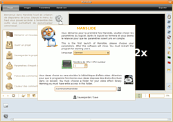
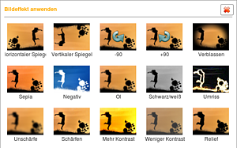

Manslide
Archivierte Anleitung
Dieser Artikel wurde archiviert, da er - oder Teile daraus - nur noch unter einer älteren Ubuntu-Version nutzbar ist. Diese Anleitung wird vom Wiki-Team weder auf Richtigkeit überprüft noch anderweitig gepflegt. Zusätzlich wurde der Artikel für weitere Änderungen gesperrt.
Zum Verständnis dieses Artikels sind folgende Seiten hilfreich:
Manslide  ist ein Programm für KDE 3.5, um Foto-CDs/DVDs bzw. eine Diaschau zu erstellen. Die erzeugte Videodatei muss anschließend noch gebrannt werden. Das Design der Benutzeroberfläche ist an die Oberfläche von Mac OS X angelehnt und unterstützt dreidimensionale Spezialeffekte. Es ist einsteigerfreundlich und relativ einfach zu benutzen.
ist ein Programm für KDE 3.5, um Foto-CDs/DVDs bzw. eine Diaschau zu erstellen. Die erzeugte Videodatei muss anschließend noch gebrannt werden. Das Design der Benutzeroberfläche ist an die Oberfläche von Mac OS X angelehnt und unterstützt dreidimensionale Spezialeffekte. Es ist einsteigerfreundlich und relativ einfach zu benutzen.
Die Entwicklung von Manslide wurde mit der Version 2.0.3 Anfang 2008 eingestellt. Der Programmautor stellt einen Nachfolger zur Verfügung - 2ManDVD .
Installation¶
Das Programm ist nicht in den offiziellen Paketquellen enthalten.
Aus dem Quellcode¶
Der Unterartikel Archiv/Manslide/Kompilieren erläutert, wie man das Programm selbst aus dem Quellcode erstellt (erfolgreich getestet für Ubuntu 8.10 Intrepid Ibex).
Menüeintrag¶
Nach Abschluss der Installation kann man Manslide über den GNOME-Menü-Eintrag
"Anwendungen -> Unterhaltungsmedien -> Manslide
starten [1]. Fehlt dieser, legt man selbst einen Starter an [2].
|  |
| Einstellungen |
Start¶
Beim Start sollte man nach dem Sprachpaket und der Anzahl der CPU-Kerne gefragt werden. Zum Abschluss wird das Verzeichnis ausgewählt, in das Manslide zukünftige Projekte abspeichert.
Bedienung¶
Die Benutzung von Manslide ist im Großen und Ganzen selbsterklärend. Dennoch gibt es bei ein, zwei Optionen Besonderheiten.
Projekt¶
Im ersten Dialog "Projekt" kann man den Speicherort der Diaschau-Projektdatei, die allgemein gültigen Einstellungen ("Importeinstellungen" genannt), also die Übergänge und Zeitabstände für die Fotos, sowie die Schriftart und Schriftfarbe einstellen.

Bilder¶
Der zweite Reiter "Bilder" dient zum Import und zur Feinjustierung der Bildeffekte. Hier kann man ein Hintergrundbild oder eine Hintergrundfarbe setzen, welche auch in 3D-Animationen angezeigt wird - den Hintergrund also nicht allzu leer aussehen lässt. In diesem Dialog kann man auch einfache Effekte wie den Invertierungseffekt oder den Schwarz/Weiß-Effekt auf einzelne Bilder anwenden. Natürlich lässt sich auch die vorher eingestellte Standardanzeigezeit der Dias für einzelne Bilder verändern.
Einstellungen¶
Im dritten Reiter "Einstellungen" kann man Animationen, weitere Effekte sowie Untertitel zur Diaschau hinzufügen. Hier ist es auch (im Reiter "Präsentation") möglich, die Anzeigeart der Diaschau zu ändern.
Audiodatei¶
Im Reiter "Audiodatei" wird die Hintergrundmusik für die Diaschau festgelegt. Hierbei sollte beachtet werden, dass es nur möglich ist, eine Musikdatei pro Diaschau zu verwenden. Falls man mehrere verwenden möchte, sollte man seine Stücke zuerst in einem Audiobearbeitungsprogramm wie Audacity zusammenführen, abspeichern und dann importieren. Des weiteren kann man gesprochene Kommentare hinzufügen, die parallel zur Hintergrundmusik laufen.
Exportieren¶
Exportiert wird über den letzten Reiter "Exportieren". Der einzugebende Name wird dann als Dateiname genutzt und in den am Anfang ausgewählten Ordner gespeichert. Hier werden auch das Ausgabeformat, die Qualität sowie der Bereich der Diaschau festgelegt.
Links¶
Manslide
auf Qt-Apps.orgDiashows erstellen - Übersichtsartikel
Videobearbeitung - Übersichtsartikel
- Erstellt mit Inyoka
-
 2004 – 2017 ubuntuusers.de • Einige Rechte vorbehalten
2004 – 2017 ubuntuusers.de • Einige Rechte vorbehalten
Lizenz • Kontakt • Datenschutz • Impressum • Serverstatus -
Serverhousing gespendet von